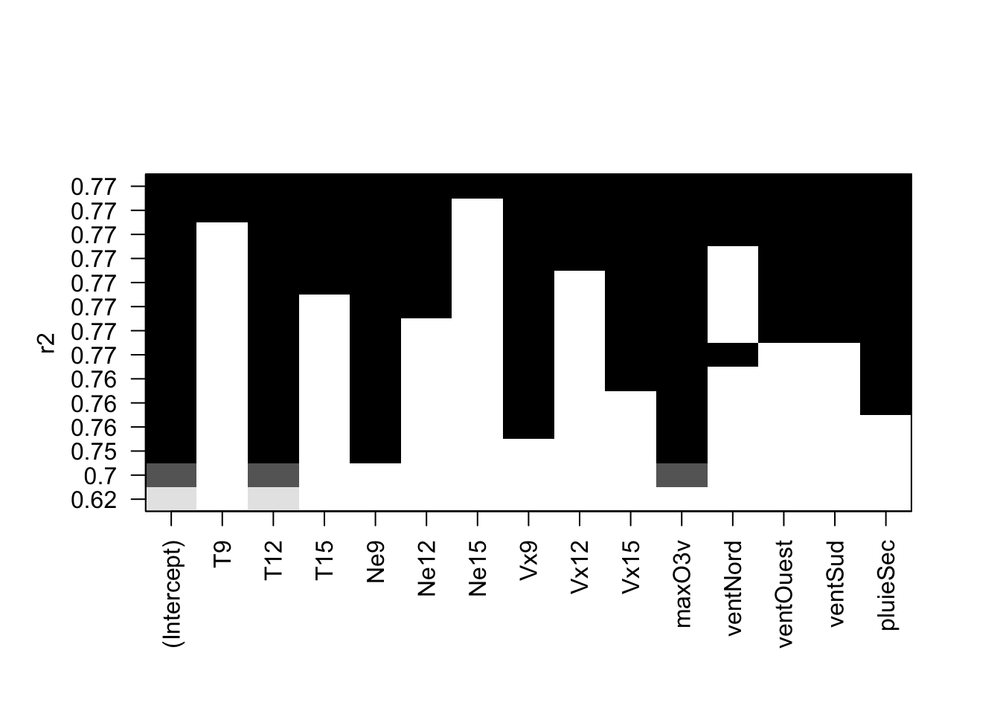
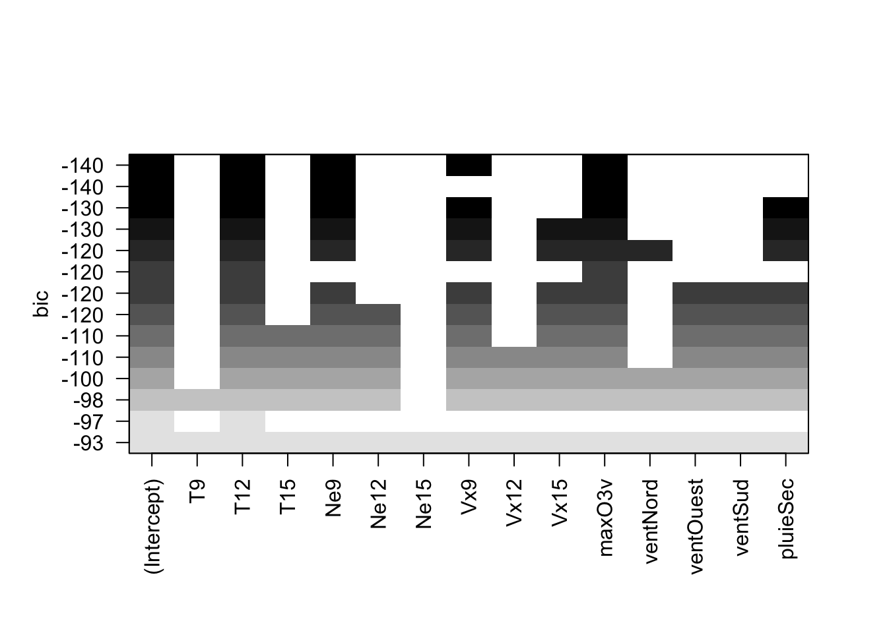
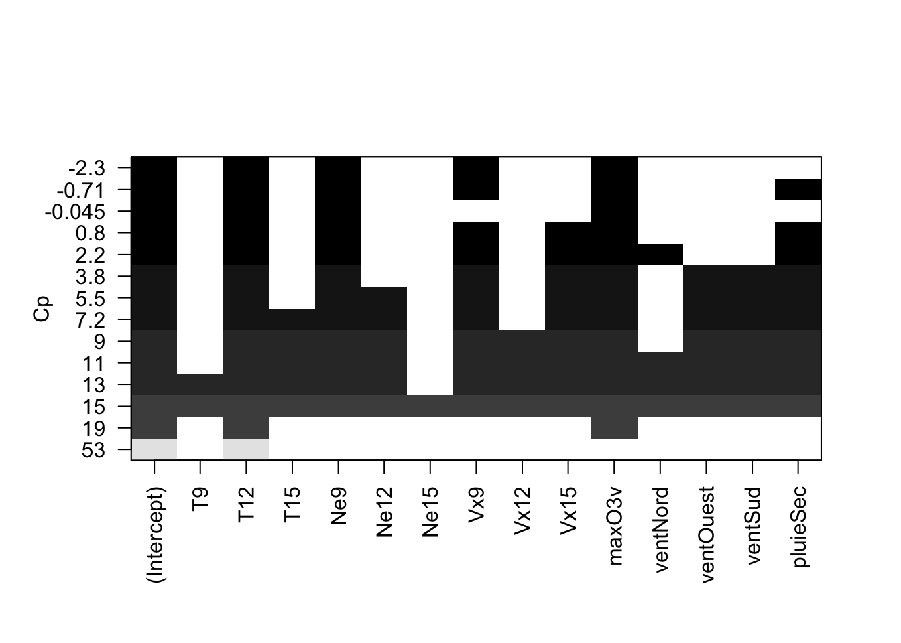
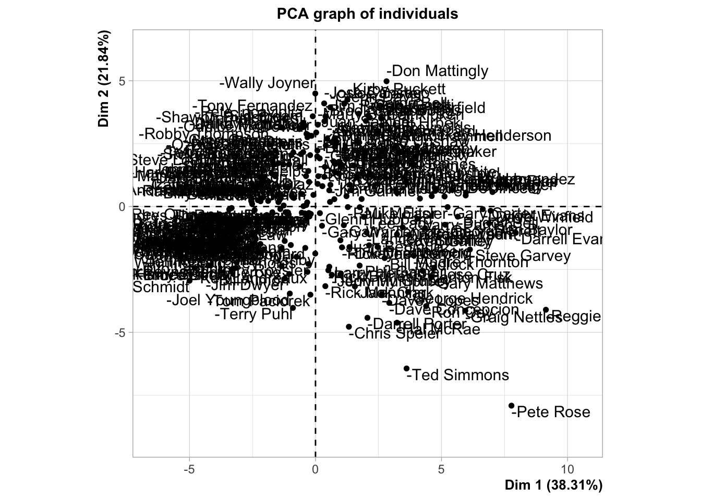
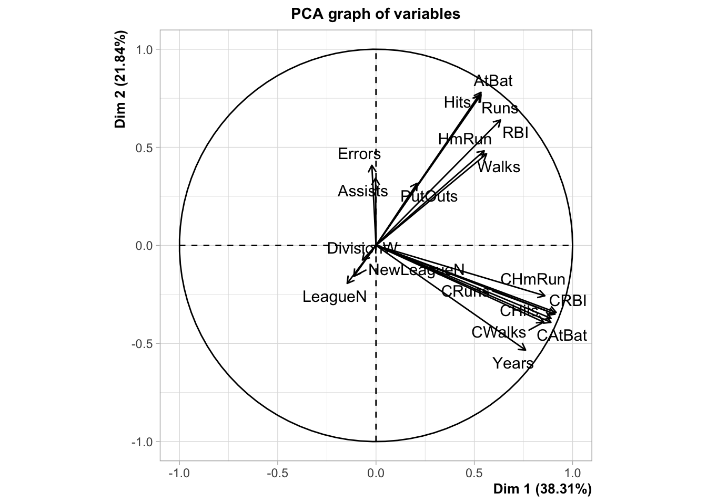

2 Régression sur composantes
Les performances des estimateurs classiques (MCO) des paramètres du modèle linéaire
\[Y=\beta_0+\beta_1X_1+\dots+\beta_dX_d+\varepsilon\] peuvent se dégrader lorsque la dimension \(d\) est grande ou en présence de dépendance linéaire entre les variables explicatives. Les régressions sur composantes consistent à trouver de nouvelles composantes \(Z_k,j=k,\dots,q\) avec \(q\leq p\) qui s’écrivent le plus souvent comme des combinaisons linéaires des \(X_j\) dans l’idée de diminuer le nombre de paramètres du modèle ou la dépendance entre les covariables. Il existe plusieurs façons de construire ces composantes, dans cette partie nous proposons :
- la régression sous composantes principales (PCR) : il s’agit de faire simplement une ACP sur la matrice des variables explicatives ;
- la régression partial least square (PLS) qui fait intervenir la variable cible dans la construction des composantes.
Nous commençons par un bref rappel sur la sélection de variables.
2.1 Sélection de variables
On considère le jeu de données ozone.txt où on cherche à expliquer la concentration maximale en ozone relevée sur une journée (variable maxO3) par d’autres variables essentiellement météorologiques.
ozone <- read.table("data/ozone.txt")
head(ozone) maxO3 T9 T12 T15 Ne9 Ne12 Ne15 Vx9 Vx12 Vx15 maxO3v
20010601 87 15.6 18.5 18.4 4 4 8 0.6946 -1.7101 -0.6946 84
20010602 82 17.0 18.4 17.7 5 5 7 -4.3301 -4.0000 -3.0000 87
20010603 92 15.3 17.6 19.5 2 5 4 2.9544 1.8794 0.5209 82
20010604 114 16.2 19.7 22.5 1 1 0 0.9848 0.3473 -0.1736 92
20010605 94 17.4 20.5 20.4 8 8 7 -0.5000 -2.9544 -4.3301 114
20010606 80 17.7 19.8 18.3 6 6 7 -5.6382 -5.0000 -6.0000 94
vent pluie
20010601 Nord Sec
20010602 Nord Sec
20010603 Est Sec
20010604 Nord Sec
20010605 Ouest Sec
20010606 Ouest PluieAjuster un modèle linéaire avec
lmet analyser la pertinence des variables explicatives dans le modèle.lin.complet <- lm(maxO3~.,data=ozone) summary(lin.complet)Call: lm(formula = maxO3 ~ ., data = ozone) Residuals: Min 1Q Median 3Q Max -51.814 -8.695 -1.020 7.891 40.046 Coefficients: Estimate Std. Error t value Pr(>|t|) (Intercept) 16.26536 15.94398 1.020 0.3102 T9 0.03917 1.16496 0.034 0.9732 T12 1.97257 1.47570 1.337 0.1844 T15 0.45031 1.18707 0.379 0.7053 Ne9 -2.10975 0.95985 -2.198 0.0303 * Ne12 -0.60559 1.42634 -0.425 0.6721 Ne15 -0.01718 1.03589 -0.017 0.9868 Vx9 0.48261 0.98762 0.489 0.6262 Vx12 0.51379 1.24717 0.412 0.6813 Vx15 0.72662 0.95198 0.763 0.4471 maxO3v 0.34438 0.06699 5.141 1.42e-06 *** ventNord 0.53956 6.69459 0.081 0.9359 ventOuest 5.53632 8.24792 0.671 0.5037 ventSud 5.42028 7.16180 0.757 0.4510 pluieSec 3.24713 3.48251 0.932 0.3534 --- Signif. codes: 0 '***' 0.001 '**' 0.01 '*' 0.05 '.' 0.1 ' ' 1 Residual standard error: 14.51 on 97 degrees of freedom Multiple R-squared: 0.7686, Adjusted R-squared: 0.7352 F-statistic: 23.01 on 14 and 97 DF, p-value: < 2.2e-16anova(lin.complet)Analysis of Variance Table Response: maxO3 Df Sum Sq Mean Sq F value Pr(>F) T9 1 43138 43138 205.0160 < 2.2e-16 *** T12 1 11125 11125 52.8706 9.165e-11 *** T15 1 876 876 4.1619 0.0440614 * Ne9 1 3244 3244 15.4170 0.0001613 *** Ne12 1 232 232 1.1035 0.2961089 Ne15 1 5 5 0.0248 0.8752847 Vx9 1 2217 2217 10.5355 0.0016079 ** Vx12 1 1 1 0.0049 0.9443039 Vx15 1 67 67 0.3186 0.5737491 maxO3v 1 6460 6460 30.6993 2.584e-07 *** vent 3 234 78 0.3709 0.7741473 pluie 1 183 183 0.8694 0.3534399 Residuals 97 20410 210 --- Signif. codes: 0 '***' 0.001 '**' 0.01 '*' 0.05 '.' 0.1 ' ' 1Il semble que quelques variables ne sont pas nécessaires dans le modèle.
Expliquer les sorties de la commande
library(leaps) mod.sel <- regsubsets(maxO3~.,data=ozone,nvmax=14) summary(mod.sel)Subset selection object Call: regsubsets.formula(maxO3 ~ ., data = ozone, nvmax = 14) 14 Variables (and intercept) Forced in Forced out T9 FALSE FALSE T12 FALSE FALSE T15 FALSE FALSE Ne9 FALSE FALSE Ne12 FALSE FALSE Ne15 FALSE FALSE Vx9 FALSE FALSE Vx12 FALSE FALSE Vx15 FALSE FALSE maxO3v FALSE FALSE ventNord FALSE FALSE ventOuest FALSE FALSE ventSud FALSE FALSE pluieSec FALSE FALSE 1 subsets of each size up to 14 Selection Algorithm: exhaustive T9 T12 T15 Ne9 Ne12 Ne15 Vx9 Vx12 Vx15 maxO3v ventNord ventOuest 1 ( 1 ) " " "*" " " " " " " " " " " " " " " " " " " " " 2 ( 1 ) " " "*" " " " " " " " " " " " " " " "*" " " " " 3 ( 1 ) " " "*" " " "*" " " " " " " " " " " "*" " " " " 4 ( 1 ) " " "*" " " "*" " " " " "*" " " " " "*" " " " " 5 ( 1 ) " " "*" " " "*" " " " " "*" " " " " "*" " " " " 6 ( 1 ) " " "*" " " "*" " " " " "*" " " "*" "*" " " " " 7 ( 1 ) " " "*" " " "*" " " " " "*" " " "*" "*" "*" " " 8 ( 1 ) " " "*" " " "*" " " " " "*" " " "*" "*" " " "*" 9 ( 1 ) " " "*" " " "*" "*" " " "*" " " "*" "*" " " "*" 10 ( 1 ) " " "*" "*" "*" "*" " " "*" " " "*" "*" " " "*" 11 ( 1 ) " " "*" "*" "*" "*" " " "*" "*" "*" "*" " " "*" 12 ( 1 ) " " "*" "*" "*" "*" " " "*" "*" "*" "*" "*" "*" 13 ( 1 ) "*" "*" "*" "*" "*" " " "*" "*" "*" "*" "*" "*" 14 ( 1 ) "*" "*" "*" "*" "*" "*" "*" "*" "*" "*" "*" "*" ventSud pluieSec 1 ( 1 ) " " " " 2 ( 1 ) " " " " 3 ( 1 ) " " " " 4 ( 1 ) " " " " 5 ( 1 ) " " "*" 6 ( 1 ) " " "*" 7 ( 1 ) " " "*" 8 ( 1 ) "*" "*" 9 ( 1 ) "*" "*" 10 ( 1 ) "*" "*" 11 ( 1 ) "*" "*" 12 ( 1 ) "*" "*" 13 ( 1 ) "*" "*" 14 ( 1 ) "*" "*"On obtient une table avec des étoiles qui permettent de visualiser les meilleurs modèles à \(1,2,\dots,8\) variables au sens du \(R^2\).
Sélectionner le meilleur modèle au sens du \(R^2\). Que remarquez-vous ?
plot(mod.sel,scale="r2")
Le meilleur modèle est le modèle complet. C’est logique puisque le \(R^2\) va toujours privilégier le modèle le plus complexe, c’est un critère
d'ajustement.Faire de même pour le \(C_p\) et le \(BIC\). Que remarquez-vous pour les variables explicatives qualitatives ?
plot(mod.sel,scale="bic")
plot(mod.sel,scale="Cp")
Ces critères choisissent ici le même modèle, avec 4 variables. On remarque que les variables qualitatives ne sont
pas réellement traitées comme des variables: une modalité est égale à une variable. Par conséquent, cette procédure ne permet pas vraiment de sélectionner des variables qualitatives.Comparer cette méthode avec des modèles sélectionnées par la fonction
stepou la fonctionbestglmdu packagebestglm.
La fonction
steppermet de faire de la sélection pas à pas. Par exemple, pour une procéduredescendanteavec le critère \(AIC\) on utilisera :mod.step <- step(lin.complet,direction="backward",trace=0) mod.stepLa fonction
bestglmpermet quant à elle de faire des sélections exhaustive ou pas à pas, on peut l’utiliser pour tous les glm. Attention les variables qualitatives doivent être des facteurs et la variable à expliquer doit être positionnée en dernière colonne pour cette fonction.ozone1 <- ozone |> mutate(vent=as.factor(vent),pluie=as.factor(pluie)) |> select(-maxO3,everything()) library(bestglm) model.bglm <- bestglm(ozone1,IC="BIC") model.bglm$BestModel |> summary()Call: lm(formula = y ~ ., data = data.frame(Xy[, c(bestset[-1], FALSE), drop = FALSE], y = y)) Residuals: Min 1Q Median 3Q Max -52.396 -8.377 -1.086 7.951 40.933 Coefficients: Estimate Std. Error t value Pr(>|t|) (Intercept) 12.63131 11.00088 1.148 0.253443 T12 2.76409 0.47450 5.825 6.07e-08 *** Ne9 -2.51540 0.67585 -3.722 0.000317 *** Vx9 1.29286 0.60218 2.147 0.034055 * maxO3v 0.35483 0.05789 6.130 1.50e-08 *** --- Signif. codes: 0 '***' 0.001 '**' 0.01 '*' 0.05 '.' 0.1 ' ' 1 Residual standard error: 14 on 107 degrees of freedom Multiple R-squared: 0.7622, Adjusted R-squared: 0.7533 F-statistic: 85.75 on 4 and 107 DF, p-value: < 2.2e-16
2.2 Régression sur composantes principales (méthodo)
L’algorithme PCP est une méthode de réduction de dimension, elle consiste à faire un modèle linéaire MCO sur les premiers axes de l’ACP. On désigne par
- \(\mathbb X\) la matrice qui contient les valeurs des variables explicatives que l’on suppose centrée réduite.
- \(Z_1,\dots,Z_p\) les axes de l’ACP qui s’écrivent comme des combinaisons linéaires des variables explicatives : \(Z_j=w_j^t X\).
L’algorithme PCR consiste à choisir un nombre de composantes \(m\) et à faire une régression MCO sur les \(m\) premiers axes de l’ACP : \[Y=\alpha_0+\alpha_1 Z_1+\dots+\alpha_mZ_m+\varepsilon.\]
Si on désigne par
- \(x\in\mathbb R^d\) une nouvelle observation que l’on a centrée réduite également;
- \(z_1,\dots,z_M\) les coordonnées de \(x\) dans la base définie par les \(m\) premiers axes de l’ACP (\(z_j=w_j^tx\))
l’algorithme PCR reverra la prévision \[\widehat m_{\text{PCR}}(x)=\widehat \alpha_0+\widehat \alpha_1 z_1+\dots+\widehat \alpha_mz_m.\] Cette prévision peut s’écrire également comme une combinaison linéaire des variables explicatives (centrées réduites ou non) : \[\widehat m_{\text{PCR}}(x)=\widehat \gamma_0+\widehat \gamma_1 \tilde x_1+\dots+\widehat \gamma_p \tilde x_p=\widehat \beta_0+\widehat \beta_1 x_1+\dots+\widehat \beta_p x_p,\] \(\tilde x_j\) désignant l’observation brute (non centrée réduite).
L’exercice suivant revient sur cet algorithme et notamment sur le lien entre ces différents paramètres.
Exercice 2.1 (Régression PCR avec R) On considère le jeu de données Hitters dans lequel on souhaite expliquer la variable Salary par les autres variables du jeu de données. Pour simplifier le problème, on supprime les individus qui possèdent des données manquantes (il ne faut pas faire ça normalement !).
library(ISLR)
Hitters <- na.omit(Hitters)Parmi les variables explicatives, certaines sont qualitatives. Expliquer comment, à l’aide de la fonction model.matrix on peut utiliser ces variables dans un modèle linéaire. On appellera X la matrice des variables explicatives construites avec cette variable.
Comme pour le modèle linéaire, on utilise des contraintes identifiantes. Cela revient à prendre une modalité de référence et à coder les autres modalités par 0-1.
X <- model.matrix(Salary~.,data=Hitters)[,-1]Calculer la matrice Xcr qui correspond à la matrice X centrée réduite. On pourra utiliser la fonction
scale.Xcr <- scale(X) Xbar <- apply(X,2,mean) stdX <- apply(X,2,sd)A l’aide de la fonction
PCAdu package FactoMineR, effectuer l’ACP du tableau Xcr avec l’optionscale.unit=FALSE.On utilise ici
scale.unit=FALSEcar les données sont déjà centrées-réduites. Ça nous permet de contrôler cette étape.library(FactoMineR) acp.hit <- PCA(Xcr,scale.unit=FALSE,graph=TRUE)

Récupérer les coordonnées des individus sur les 5 premiers axes de l’ACP (variables \(Z\) dans le cours).
CC <- acp.hit$ind$coordEffectuer la régression linéaire sur les 5 premières composantes principales et calculer les estimateurs des MCO (\(\widehat\alpha_k,k=1,\dots,5\) dans le cours).
donnees <- cbind.data.frame(CC,Salary=Hitters$Salary) mod <- lm(Salary~.,data=donnees) alpha <- coef(mod) alpha(Intercept) Dim.1 Dim.2 Dim.3 Dim.4 Dim.5 535.92588 106.57139 21.64469 24.34057 37.05637 -58.52540Remarque :
- On obtient ici les estimateurs des \(\alpha,j=1,\dots,5\).
- on peut aussi tout faire “à la main” (sans utiliser PCA)
acp.main <- eigen(t(Xcr)%*%Xcr) U <- acp.main$vectors CC <- Xcr%*%(-U[,1:5]) D <- cbind.data.frame(CC,Salary=Hitters$Salary) modS <- lm(Salary~.,data=D) coefS <- modS$coefficients coef(modS)(Intercept) `1` `2` `3` `4` `5` 535.92588 -106.57139 21.64469 24.34057 37.05637 58.52540- On obtient ici les estimateurs des \(\alpha,j=1,\dots,5\).
En déduire les estimateurs dans l’espace des données initiales pour les données centrées réduites, puis pour les données brutes. On pourra récupérer les vecteurs propres de l’ACP (\(w_k\) dans le cours) dans la sortie svd de la fonction PCA.
Pour les données centrées-réduites, les coefficients s’obtiennent avec les formules vues en cours
\[\widehat\beta_0=\bar{\mathbb Y}\quad\text{et}\quad \widehat\beta_j=\sum_{k=1}^m\widehat\alpha_kw_{kj}.\]
W <- acp.hit$svd$V V <- t(W) beta0.cr <- mean(Hitters$Salary) beta.cr <- as.vector(alpha[2:6])%*%V beta.cr[,1] [,2] [,3] [,4] [,5] [,6] [,7] [,8] [1,] 28.76604 30.44702 25.8445 33.00088 33.81997 35.08779 22.35103 29.01477 [,9] [,10] [,11] [,12] [,13] [,14] [,15] [,16] [1,] 29.78584 30.00201 32.06912 31.11231 31.48735 19.439 -63.20387 17.36044 [,17] [,18] [,19] [1,] -5.523264 -6.044002 21.74267Pour les données brutes, on utilise les formules :
\[\widehat\gamma_0=\widehat\beta_0-\sum_{j=1}^p\widehat\beta_j\mu_j\quad\text{et}\quad\widehat\gamma_j=\frac{\widehat\beta_j}{\sigma_j}.\]
gamma0 <- beta0.cr-sum(beta.cr*Xbar/stdX) gamma <- beta.cr/stdX gamma0[1] -58.32022gamma[,1] [,2] [,3] [,4] [,5] [,6] [,7] [,8] [1,] 0.1952793 0.6747214 2.95126 1.292134 1.306662 1.615605 4.662667 0.01268914 [,9] [,10] [,11] [,12] [,13] [,14] [,15] [1,] 0.04595165 0.3649987 0.09682748 0.09621344 0.119245 38.86728 -126.19 [,16] [,17] [,18] [,19] [1,] 0.06201606 -0.03807032 -0.9148466 43.51629
Retrouver les estimateurs dans l’espace des données initiales pour les données centrées réduites à l’aide de la fonction
pcrdu package pls.library(pls) pcr.fit <- pcr(Salary~.,data=Hitters,scale=TRUE,ncomp=19) coefficients(pcr.fit,ncomp=5), , 5 comps Salary AtBat 28.766042 Hits 30.447021 HmRun 25.844498 Runs 33.000876 RBI 33.819966 Walks 35.087794 Years 22.351033 CAtBat 29.014768 CHits 29.785842 CHmRun 30.002014 CRuns 32.069124 CRBI 31.112315 CWalks 31.487349 LeagueN 19.438996 DivisionW -63.203872 PutOuts 17.360440 Assists -5.523264 Errors -6.044002 NewLeagueN 21.742668On remarque que la fonction PCR renvoie les coefficients par rapport aux variables initiales centrées réduites. Cela fait du sens car il est dans ce cas possible de comparer les valeurs des estimateurs pour tenter d’interpréter le modèle. C’est beaucoup plus difficile à faire avec les coefficients des axes de l’ACP ou des variables intiales. Il est également important de noter que, contrairement aux estimateurs MCO du modèle linéaire Gaussien, on n’a pas d’information précise sur la loi des estimateurs, il n’est donc pas possible (ou pas facile) de faire des tests ou de calculer des intervalles de confiance.
On considère les individus suivants
df.new <- Hitters[c(1,100,80),]Calculer de 3 façons différentes les valeurs de salaire prédites par la régression sur 5 composantes principales.
Approche classique : on utilise
predict.pcr:predict(pcr.fit,newdata=df.new,ncomp=5), , 5 comps Salary -Alan Ashby 495.0068 -Hubie Brooks 577.9581 -George Bell 822.0296On considère les valeurs centrées réduites et on utilise : \[\widehat m_{\text{PCR}}(x)=\widehat\beta_0+\widehat\beta_1x_1+\dots+\widehat\beta_px_p.\]
t(as.matrix(coefficients(pcr.fit,ncomp=5))) %*% t(as.matrix(Xcr[c(1,100,80),]))+mean(Hitters$Salary)-Alan Ashby -Hubie Brooks -George Bell [1,] 495.0068 577.9581 822.0296#ou beta0.cr+beta.cr%*%t(as.matrix(Xcr[c(1,100,80),]))-Alan Ashby -Hubie Brooks -George Bell [1,] 495.0068 577.9581 822.0296On considère les données brutes et on utilise : \[\widehat m_{\text{PCR}}(x)=\widehat\gamma+\widehat\gamma_1\tilde x_1+\dots+\widehat\gamma_p\tilde x_p.\]
gamma0+gamma %*% t(as.matrix(X[c(1,100,80),]))-Alan Ashby -Hubie Brooks -George Bell [1,] 495.0068 577.9581 822.0296
Exercice 2.2 (Composantes PCR) On rappelle que les poids \(w_k\) des composantes principales s’obtiennent en résolvant le problème :
\[\max_{w\in\mathbb R^d}\mathbf V(\mathbb Xw)\] \[\text{sous les contraintes }\|w\|=1,w^t\mathbb X^t\mathbb X w_\ell=0, \ell=1,\dots,k-1.\]
Montrer \(w_1\) est un vecteur propre associé à la plus grande valeur propre de \(\mathbb X^t\mathbb X\).
On écrit le Lagrangien \[L(w,\lambda)=w^t\mathbb X^t\mathbb Xw-\lambda(w^tw-1).\] et on le dérive par rapport à \(w\) : \[\frac{\partial L}{\partial w}(w,\lambda)=2\mathbb X^t\mathbb Xw-2\lambda w.\] En annulant cette dérivée, on déduit que \(w_1\) est un vecteur propre de \(\mathbb X^t\mathbb X\). De plus, si \(w\) est vecteur propre unitaire de \(\mathbb X^t\mathbb X\) associé à la valeur propre \(\lambda\) on a \(\mathbf V(\mathbb Xw)=\lambda\). On déduit que \(w_1\) est un vecteur propre associé à la plus grande valeur propre de \(\mathbb X^t\mathbb X\).
Calculer \(w_2\).
On écrit le Lagrangien \[L(w,\lambda,\mu)=w^t\mathbb X^t\mathbb Xw-\lambda(w^tw-1)-\mu w^t\mathbb X^t\mathbb Xw_1\] et on calcule les dérivées partielles : \[\frac{\partial L}{\partial w}(w,\lambda,\mu)=2\mathbb X^t\mathbb Xw-2\lambda w-\mu\mathbb X^t\mathbb Xw_1.\] \[\frac{\partial L}{\partial \lambda}(w,\lambda,\mu)=w^tw-1\quad\text{et}\quad\frac{\partial L}{\partial \mu}(w,\lambda,\mu)=-w^t\mathbb X^t\mathbb Xw_1.\] En multipliant la première dérivée partielle par \(w_1^t\) et en utilisant le fait que \(W_1\) est un vecteur propre de \(\mathbb X^t\mathbb X\), on déduit que \(\mu=0\). Par conséquent, \(w_2\) est un vecteur propre associé à la deuxième plus grande valeur propre de \(\mathbb X^t\mathbb X\).
2.3 Régression PLS : méthodo
La régression PLS propose de construire également de nouvelles composantes comme des combinaisons linéaires des variables explicatives. Comme pour l’algorithme PCR, les composantes sont calculées les unes après les autres et orthogonales entre elles. La principale différence et qu’on ne cherche pas les composantes qui maximisent la variabilités des observations projetées, mais les composantes qui maximisent la colinéarité avec la cible. L’algorithme est expliqué dans l’exercice suivant.
Exercice 2.3 (Calcul des composantes PLS) On reprend les notations du cours : \(\mathbb Y\) désigne le vecteur de la variable à expliquer et \(\mathbb X\) la matrice qui contient les observations des variables explicatives. On la suppose toujours centrée réduite.
On pose \(\mathbb Y^{(1)}=\mathbb Y\) et \(\mathbb X^{(1)}=\mathbb X\). On cherche \(Z_1=w_1^tX^{(1)}\) qui maximise \[\langle \mathbb X^{(1)}w_1,\mathbb Y^{(1)}\rangle\quad\text{sous la contrainte}\quad\|w\|^2=1.\] Cela revient à cherche la combinaison linéaire des colonnes de \(\mathbb X^{(1)}\) la plus corrélée à \(\mathbb Y^{(1)}\). Calculer cette première composante.
On écrit le lagrangien \[L(x,\lambda)={\mathbb Y^{(1)}}^t\mathbb X^{(1)}w_1-\frac{1}{2}\lambda(\|w_1\|^2-1)\] En dérivant par rapport à \(w\) et \(\lambda\) on obtient les équations \[\left\{ \begin{array}{l} {\mathbb X^{(1)}}^t\mathbb Y^{(1)}-\lambda w_1=0 \\ \|w_1\|^2=1 \end{array}\right.\] La solution est donnée par \[w_1=\frac{{\mathbb X^{(1)}}^t\mathbb Y^{(1)}}{{\|\mathbb X^{(1)}}^t\mathbb Y^{(1)}\|}.\]
On pose \(Z_1=w_1^tX^{(1)}\) et \(\mathbb Z_1=\mathbb X^{(1)}w_1\). On considère le modèle de régression linéaire \[Y^{(1)}=\alpha_0+\alpha_1Z_1+\varepsilon.\] Exprimer les estimateurs MCO de \(\alpha=(\alpha_0,\alpha_1)\) en fonction de \(\mathbb Z^{(1)}\) et \(\mathbb Y^{(1)}\).
On déduit \[\widehat \alpha_0=\bar{\mathbb Y}^{(1)}-\widehat \alpha_1\bar{\mathbb Z}_1=\bar{\mathbb Y}^{(1)}\] car \(\bar{\mathbb Z}_1=0\) puisque \(\mathbb X^{(1)}\) est centrée. Le second estimateur s’obtient par \[\widehat \alpha_1=\frac{\langle \mathbb Z_1,\mathbb Y^{(1)}\rangle}{\langle \mathbb Z_1,\mathbb Z_1\rangle}.\]
On passe maintenant à la deuxième composante. On cherche à expliquer la partie résiduelle \[\mathbb Y^{(2)}=P_{Z_1^\perp}(\mathbb Y^{(1)})=\widehat\varepsilon_1=\mathbb Y^{(1)}-\widehat{\mathbb Y}^{(1)}\] par la “meilleure” combinaison linéaire orthogonale à \(Z_1\). On orthogonalise chaque \(\tilde{\mathbb X}_j^{(1)}\) par rapport à \(\mathbb Z_1\) : \[{\mathbb X}_j^{(2)}=P_{\mathbb Z_1^\perp}({\mathbb X}_j^{(1)})=(\text{Id}-P_{\mathbb Z_1})({\mathbb X}_j^{(1)})={\mathbb X}_j^{(1)}-\frac{\langle \mathbb Z_1,{\mathbb X}_j^{(1)}\rangle}{\langle \mathbb Z_1,\mathbb Z_1\rangle}\mathbb Z_1.\] et on déduit \(w_2\) comme \(w_1\) : \(w_2=\tilde{\mathbb X}^{(2)'}\mathbb Y^{(2)}\). On considère ensuite le modèle \(Y^{(2)}=\alpha_2Z_2+\varepsilon\). Exprimer l’estimateur des MCO de \(\alpha_2\) en fonction de \(\mathbb Z_2=\mathbb X^{(2)}w_2\) et \(\mathbb Y\).
On a \[\widehat\alpha_2=\frac{\langle \mathbb Z_2,\mathbb Y^{(2)}\rangle}{\langle \mathbb Z_2,\mathbb Z_2\rangle}=\frac{\langle \mathbb Z_2,\mathbb Y-\widehat{\mathbb Y}^{(1)}\rangle}{\langle \mathbb Z_2,\mathbb Z_2\rangle}=\frac{\langle \mathbb Z_2,\mathbb Y\rangle}{\langle \mathbb Z_2,\mathbb Z_2\rangle}\] car \(\widehat{\mathbb Y}^{(1)}=\widehat \alpha_0+\widehat \alpha_1\mathbb Z_1\) est orthogonal à \(\mathbb Z_2\).
Exercice 2.4 (Régression PLS sur R) On considère les mêmes données que précédemment.
A l’aide du vecteur \(\mathbb Y\) (Salary) et de la matrice des \(\mathbb X\) centrées réduites calculées dans l’Exercice 2.1, calculer la première composante PLS \(\mathbb Z_1\).
Y <- as.vector(Hitters$Salary) w1 <- t(Xcr)%*%Y w1[,1] AtBat 46659.1995 Hits 51848.3247 HmRun 40543.5500 Runs 49624.3823 RBI 53122.7240 Walks 52462.0450 Years 47354.8899 CAtBat 62185.5603 CHits 64877.3193 CHmRun 62043.1671 CRuns 66504.6198 CRBI 67011.4288 CWalks 57893.5821 LeagueN -1688.0134 DivisionW -22753.8726 PutOuts 35514.7030 Assists 3006.3756 Errors -638.3256 NewLeagueN -335.0136Z1 <- Xcr%*%w1En déduire le coefficient associé à cette première composante en considérant le modèle \[Y=\alpha_1 Z_1+\varepsilon.\]
df <- data.frame(Z1,Y) mod1 <- lm(Y~Z1-1,data=df) alpha1 <- coef(mod1) alpha1Z1 0.0005367014En déduire les coefficients en fonction des variables initiales (centrées réduites) de la régression PLS à une composante \[Y=\beta_0+\beta_1X_1+\dots+\beta_pX_p+\varepsilon.\]
alpha1*w1[,1] AtBat 25.0420570 Hits 27.8270677 HmRun 21.7597795 Runs 26.6334747 RBI 28.5110396 Walks 28.1564522 Years 25.4154350 CAtBat 33.3750764 CHits 34.8197471 CHmRun 33.2986538 CRuns 35.6931216 CRBI 35.9651267 CWalks 31.0715657 LeagueN -0.9059591 DivisionW -12.2120349 PutOuts 19.0607903 Assists 1.6135259 Errors -0.3425902 NewLeagueN -0.1798022Retrouver ces coefficients en utilisant la fonction
plsr.pls.fit <- plsr(Salary~.,data=Hitters,scale=TRUE) coefficients(pls.fit,ncomp = 1), , 1 comps Salary AtBat 25.0420570 Hits 27.8270677 HmRun 21.7597795 Runs 26.6334747 RBI 28.5110396 Walks 28.1564522 Years 25.4154350 CAtBat 33.3750764 CHits 34.8197471 CHmRun 33.2986538 CRuns 35.6931216 CRBI 35.9651267 CWalks 31.0715657 LeagueN -0.9059591 DivisionW -12.2120349 PutOuts 19.0607903 Assists 1.6135259 Errors -0.3425902 NewLeagueN -0.1798022
2.4 Comparaison : PCR vs PLS.
Séparer le jeu de données (
Hitterstoujours) en un échantillon d’apprentissage de taille 200 et un échantillon test de taille 63.set.seed(1234) perm <- sample(nrow(Hitters)) dapp <- Hitters[perm[1:200],] dtest <- Hitters[perm[201:nrow(Hitters)],]Avec les données d’apprentissage uniquement construire les régressions PCR et PLS. On choisira les nombres de composantes par validation croisée.
choix.pcr <- pcr(Salary~.,data=dapp,validation="CV") ncomp.pcr <- which.min(choix.pcr$validation$PRESS) ncomp.pcr[1] 4choix.pls <- plsr(Salary~.,data=dapp,validation="CV") ncomp.pls <- which.min(choix.pls$validation$PRESS) ncomp.pls[1] 3Comparer les deux méthodes en utilisant l’échantillon de validation. On pourra également utiliser un modèle linéaire classique.
mod.lin <- lm(Salary~.,data=dapp)prev <- data.frame( lin=predict(mod.lin,newdata=dtest), pcr=as.vector(predict(choix.pcr,newdata = dtest,ncomp=ncomp.pcr)), pls=as.vector(predict(choix.pls,newdata = dtest,ncomp=ncomp.pls)), obs=dtest$Salary )prev |> summarize_at(1:3,~(mean((.-obs)^2))) |> sqrt()lin pcr pls 1 334.8819 348.3943 342.7771Comparer ces méthodes à l’aide d’une validation croisée 10 blocs.
Attention il ne s’agit pas ici de sélectionner les nombres de composantes par validation croisée. On veut comparer :
l’algorithme PCR qui sélectionne le nombre de composantes par validation croisée à
l’algorithme PLS qui sélectionne le nombre de composantes par validation croisée.
On définit d’abord les 10 blocs pour la validation croisée :
set.seed(1234) bloc <- sample(1:10,nrow(Hitters),replace=TRUE) table(bloc)bloc 1 2 3 4 5 6 7 8 9 10 19 22 31 29 28 39 19 26 25 25Puis on fait la validation croisée (en sélectionnant le nombre de composantes par validation croisée) à chaque étape :
set.seed(4321) prev <- data.frame(matrix(0,nrow=nrow(Hitters),ncol=3)) names(prev) <- c("lin","PCR","PLS") for (k in 1:10){ # print(k) ind.test <- bloc==k dapp <- Hitters[!ind.test,] dtest <- Hitters[ind.test,] choix.pcr <- pcr(Salary~.,data=dapp,validation="CV") ncomp.pcr <- which.min(choix.pcr$validation$PRESS) choix.pls <- plsr(Salary~.,data=dapp,validation="CV") ncomp.pls <- which.min(choix.pls$validation$PRESS) mod.lin <- lm(Salary~.,data=dapp) prev[ind.test,] <- data.frame( lin=predict(mod.lin,newdata=dtest), PCR=as.vector(predict(choix.pcr,newdata = dtest,ncomp=ncomp.pcr)), PLS=as.vector(predict(choix.pls,newdata = dtest,ncomp=ncomp.pls))) }prev |> mutate(obs=Hitters$Salary) |> summarize_at(1:3,~(mean((.-obs)^2))) |> sqrt()lin PCR PLS 1 340.0631 343.8019 350.6712On compare à un modèle qui prédit toujours la moyenne :
var(Hitters$Salary) |> sqrt()[1] 451.1187On peut retenter l’analyse en considérant toutes les interactions d’ordre 2 :
set.seed(54321) prev1 <- data.frame(matrix(0,nrow=nrow(Hitters),ncol=3)) names(prev1) <- c("lin","PCR","PLS") for (k in 1:10){ # print(k) ind.test <- bloc==k dapp <- Hitters[!ind.test,] dtest <- Hitters[ind.test,] choix.pcr <- pcr(Salary~.^2,data=dapp,validation="CV") ncomp.pcr <- which.min(choix.pcr$validation$PRESS) choix.pls <- plsr(Salary~.^2,data=dapp,validation="CV") ncomp.pls <- which.min(choix.pls$validation$PRESS) mod.lin <- lm(Salary~.^2,data=dapp) prev1[ind.test,] <- data.frame( lin=predict(mod.lin,newdata=dtest), PCR=as.vector(predict(choix.pcr,newdata = dtest,ncomp=ncomp.pcr)), PLS=as.vector(predict(choix.pls,newdata = dtest,ncomp=ncomp.pls)) ) }On obtient les performances suivantes :
prev1 |> mutate(obs=Hitters$Salary) |> summarize_at(1:3,~(mean((.-obs)^2))) |> sqrt()lin PCR PLS 1 1494.847 330.0474 349.1116On mesure bien l’intérêt de réduire la dimension dans ce nouveau contexte.